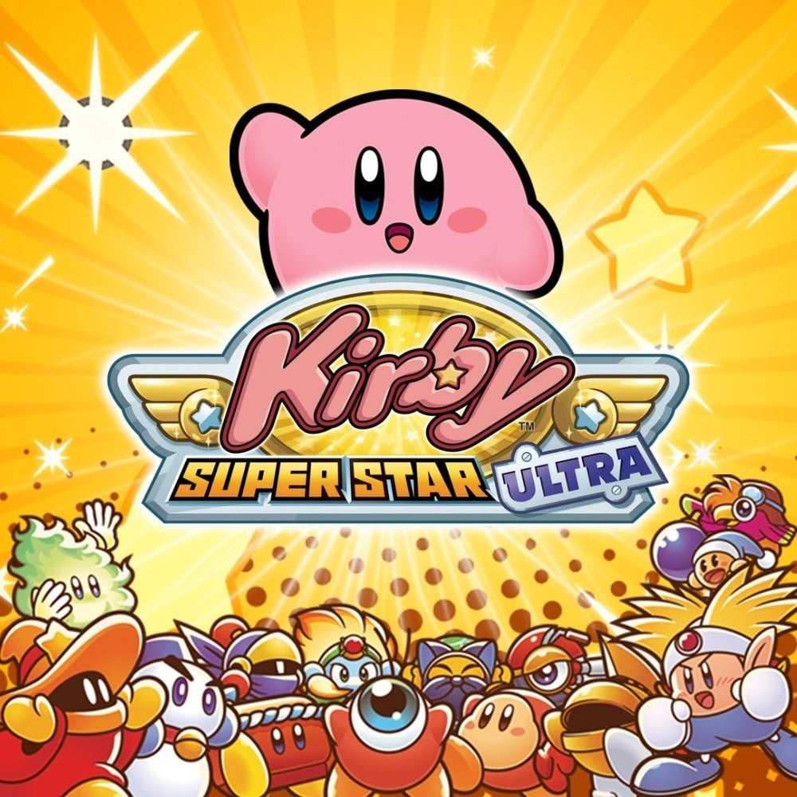
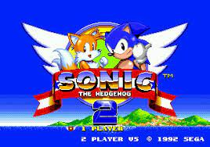
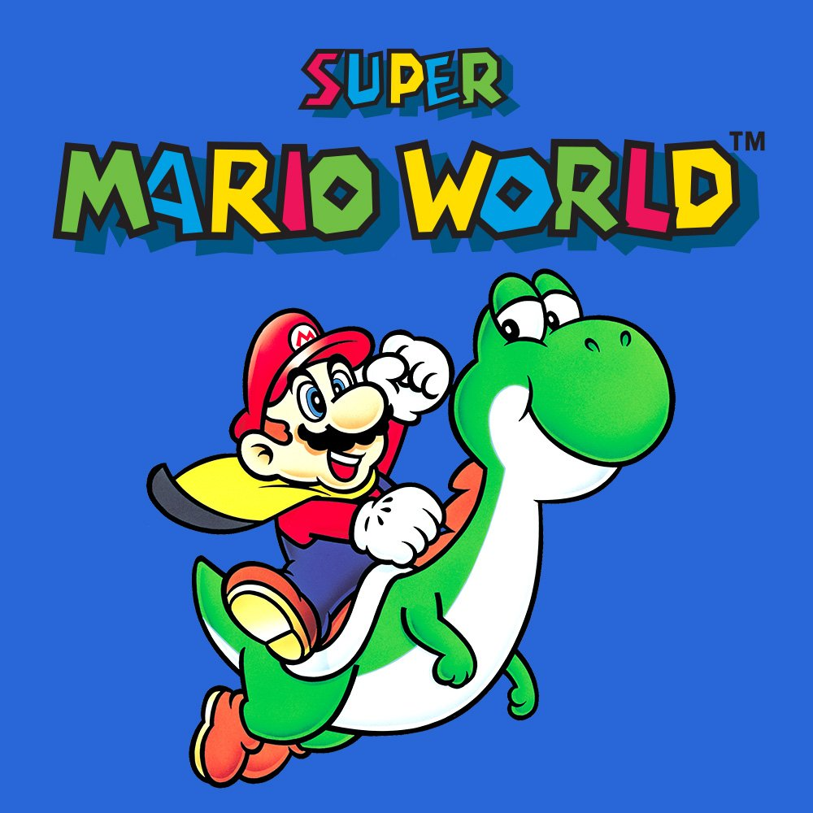

-
Kirby Super Star Ultra

-
Celeste
-
Sonic The Hedgehog 2

-
Super Mario World

-
Cuphead
Kirby Super Star (Super Nintendo) Ou Kirby Super Star Ultra (Nintendo DS) é uma coleção de jogos do Kirby, que possui uma bela trilha sonora e arte fofa. Para quem não conhece os jogos, a mecanica principal de é poder copiar as habilidades de seus inimigos engolindo-os dando grande variedade a sua gameplay, é um jogo fácil porém extremamente divertido.
Aqui uma gameplay completa do 1º jogo da coletânea:

Celeste é um jogo desafiador para PC/XBOX/PS4/SWITCH em que a protagonista Madeline deve escalar uma montanha e conhece personagens pelo caminho, o jogo requer habilidades mecanicas precisas do jogador, em que você ira morrer bastante até finalmente conseguir chegar no seu objetivo e se encher de felicidade, além de apresentar uma historia sobre o confronto mental que ela possui.
Gameplay:
Sonic The Hedgehog 2 lançado para PC/ANDROID/MEGA DRIVE, é um jogo que você atravessa rapidamente os estagios com Sonic o ouriço azul ou Tails para impedir Dr Robotinik de transformar todos os animais da ilha em robô.
Gameplay da primeira zona:
Super Mario World, um dos clássicos do gênero com bela trilha sonora, que adicionou tudo dos primeiros três jogos e refinou, além de ter adicionado novas mecanicas e a introdução de Yoshi.
Gameplay:

Cuphead é um jogo de boss rush feito com animação baseada nos desenhos de 1930, em que Cuphead e Mugman perdem uma aposta com o diabo em um cassino e devem tentar recuperar suas almas enfrentandos inimigos pelo caminho. É um jogo desafiador que requer reflexo e decorar os padrões de inimigos.
Gameplay: